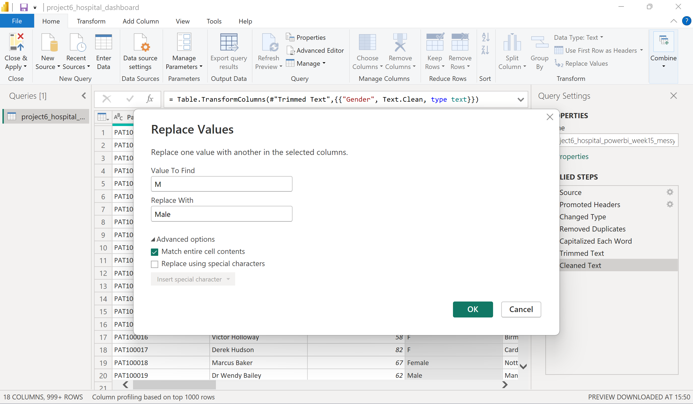

Step 2 — Standardising Gender Values


Patient gender values were reviewed and standardised to ensure consistent categorisation across the dataset. Cleaning categorical variables improves filtering, grouping and visualisation accuracy throughout the Power BI dashboard.
- Removed inconsistent text values.
- Standardised Male and Female categories.
- Improved slicer accuracy.
- Enhanced demographic reporting.
Business Value:
Consistent gender categories improve reporting reliability and ensure demographic analyses
accurately reflect the underlying patient population.